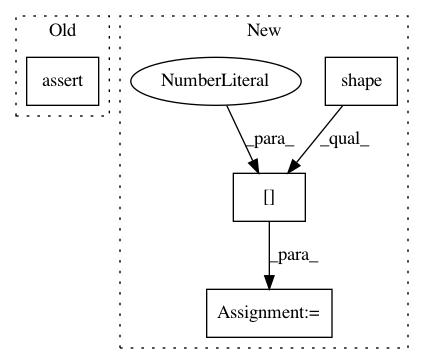

a87e4416265ccb7e1f57cfa263e2ca5fcea29cdd,geomstats/special_orthogonal_group.py,SpecialOrthogonalGroup,skew_matrix_from_vector,#SpecialOrthogonalGroup#Any#,330
Before Change
// TODO(nina): Change gs.cast function for elementary types
vec_dim = gs.cast(gs.array([vec_dim]), gs.float32)[0]
mat_dim = int((1. + gs.sqrt(1. + 8. * vec_dim)) / 2.)
assert mat_dim == self.n
skew_mat = gs.zeros((n_vecs,) + (self.n,) * 2)
if self.n == 3:
levi_civita_symbol = gs.array([
After Change
vec = gs.to_ndarray(vec, to_ndim=2)
n_vecs = gs.shape(vec)[0]
vec_dim = gs.shape(vec)[1]
// TODO(nina): Change gs.cast function for elementary types
vec_dim = gs.cast(gs.array([vec_dim]), gs.float32)[0]
mat_dim = gs.cast(((1. + gs.sqrt(1. + 8. * vec_dim)) / 2.), gs.int32)
In pattern: SUPERPATTERN
Frequency: 3
Non-data size: 4
Instances
Project Name: geomstats/geomstats
Commit Name: a87e4416265ccb7e1f57cfa263e2ca5fcea29cdd
Time: 2018-09-27
Author: ninamio78@gmail.com
File Name: geomstats/special_orthogonal_group.py
Class Name: SpecialOrthogonalGroup
Method Name: skew_matrix_from_vector
Project Name: GPflow/GPflow
Commit Name: d1ac7b831ad36cd0e4bdd7980819f83208345148
Time: 2018-02-07
Author: alex.ialongo@gmail.com
File Name: gpflow/expectations.py
Class Name:
Method Name: _expectation
Project Name: tensorflow/transform
Commit Name: f73cdc286a3e125cf7019336621cb10370ebfd52
Time: 2019-04-25
Author: askerryryan@google.com
File Name: tensorflow_transform/tf_utils.py
Class Name:
Method Name: _reduce_vocabulary_inputs